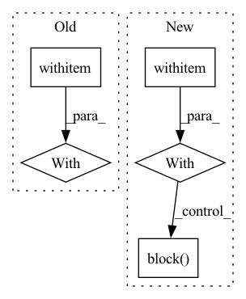

Pattern ID :7507
Before Change
def query():
f = Flow.load_config("flows/query.yml")
with f :
f.block()
def index_restful(num_docs):After Change
flow = Flow.load_config("flows/query.yml")
flow.rest_api = True
flow.protocol = "http"
with flow :
flow.block()
def query_text():
def print_result(response):In pattern: SUPERPATTERN
Frequency: 3
Non-data size: 5
Instances Fragment ID: 24793126
Project Name: jina-ai/examples
Commit Name: e2bac6411dfc263b22bd8023274ce5a662e21c57
Time: 2021-07-16
Author: 51201318+slettner@users.noreply.github.com
File Name: multires-lyrics-search/app.py
M Class Name: AnonimousClass
N Class Name: AnonimousClass
M Method Name: query(0)
N Method Name: query(0)
M Parent Class:
N Parent Class:
M File Name: multires-lyrics-search/app.py
N File Name: multires-lyrics-search/app.py
M Start Line: 63
M End Line: 68
N Start Line: 42
N End Line: 48
Before Change
def index_restful(num_docs):
f = Flow().load_config("flows/flow-index.yml")
with f :
data_path = os.path.join(os.path.dirname(__file__), os.environ.get("JINA_DATA_FILE", None))
f.logger.info(f"Indexing {data_path}")
url = f"http://0.0.0.0:{f.port_expose}/index"
After Change
def index_restful():
flow = Flow().load_config("flows/flow-index.yml")
flow.use_rest_gateway()
with flow :
flow.block()
def check_index_result(resp):
for doc in resp.data.docs: Fragment ID: 24793124
Project Name: jina-ai/examples
Commit Name: edaccb36633b8c0975805f2c739d1c208a732368
Time: 2021-06-15
Author: zhuoran2@andrew.cmu.edu
File Name: cross-modal-search/app.py
M Class Name: AnonimousClass
N Class Name: AnonimousClass
M Method Name: index_restful(0)
N Method Name: index_restful(1)
M Parent Class:
N Parent Class:
M File Name: cross-modal-search/app.py
N File Name: cross-modal-search/app.py
M Start Line: 33
M End Line: 51
N Start Line: 26
N End Line: 31
Before Change
"img_mean": [0.485, 0.456, 0.406],
"img_std": [0.229, 0.224, 0.225]}})
f.use_rest_gateway()
with f :
f.block()
@click.command()After Change
"img_mean": [0.485, 0.456, 0.406],
"img_std": [0.229, 0.224, 0.225]}})
flow.use_rest_gateway()
with flow :
flow.block()
@click.command()
@click.option( Fragment ID: 24793125
Project Name: jina-ai/examples
Commit Name: f7e0191f8792cfd23956c6eaddcee9c834fcbd6f
Time: 2021-05-28
Author: jakob.kruse@jina.ai
File Name: pokedex-with-bit/app.py
M Class Name: AnonimousClass
N Class Name: AnonimousClass
M Method Name: query_restful(0)
N Method Name: query_restful(0)
M Parent Class:
N Parent Class:
M File Name: pokedex-with-bit/app.py
N File Name: pokedex-with-bit/app.py
M Start Line: 55
M End Line: 77
N Start Line: 54
N End Line: 76